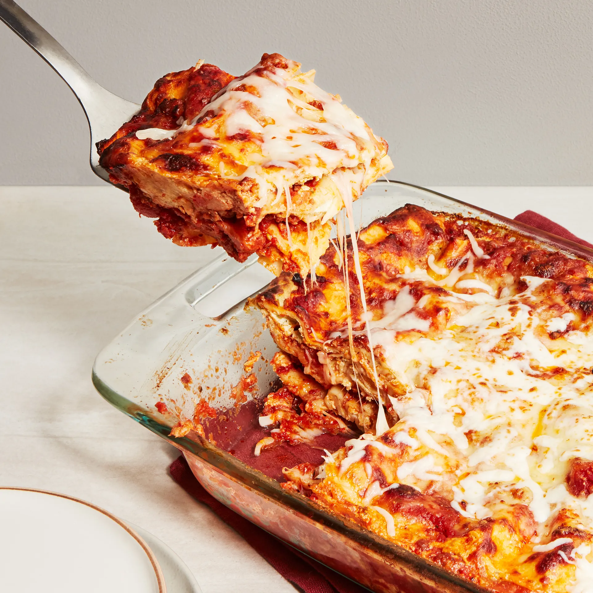

Home
Lasagna

Description
This is a classic lasagna recipe without all the fuss of some of the more complex recipes out there. This will fill your belly while not emptying your patience for preparing it. Enjoy!
Ingredients
Cheese Filling
- 15 oz. ricotta cheese, 2 cups
- 1 large egg
- 2 cups mozzarella cheese
- 3/4 cup Parmesan cheese, freshly grated
- 2 teaspoons Italian seasoning
- 1/2 teaspoon salt
- 1/4 teaspoon pepper
Meat Sauce
- 1 tablespoon olive oil
- 1 yellow onion, finely diced
- 3/4 lb. ground beef
- 3/4 lb. ground Italian sausage
- 3 cloves garlic, minced
- 1/2 cup chicken broth
- 40 oz. marinara sauce
- 1 tablespoon tomato paste
- 1 teaspoon hot sauce
- 1 teaspoon Worcestershire sauce
Lasagna Noodles / Cheese Topping
- 12 lasagna noodles, plus extra in case of breakage
- 2.5 cups mozzarella cheese
Steps
- Combine cheese filling ingredients iin a medium bowl and set aside.
- Heat olive oil over medium heat and add the diced onions. Let soften for 10 minutes.
- Add ground beef and sausage and increase heat to medium-high.
- Add the chicken broth, marinara sauce, tomato paste, hot sauce, and Worcestershire sauce. Bring to a boil, then reduce to a simmer. Cover partially and let simmer while boiling the pasta noodles.
- Preheat oven to 375.
- Begin boiling a large pot of salted pasta water, and cook noodles to al dante.
- Drain and cool noodles with cold water.
- Spread 1 cup of meat sauce to the bottom of the cassarole dish, then add a layer of lasagna noodles.
- Spread 1/3 of the cheese mixture over the noodles, then 1 1/2 cups of meat sauce.
- Layer similarly until all ingredients used or dish is filled.
- Spray foil with nonstick cooking spray and place it spray-side-down on top of the baking dish to prevent the cheese from sticking to it.
- Bake for 35 minutes. Remove cover and bake for another 10 minutes.
- Let sit and garnish with parsely after 15 minutes.